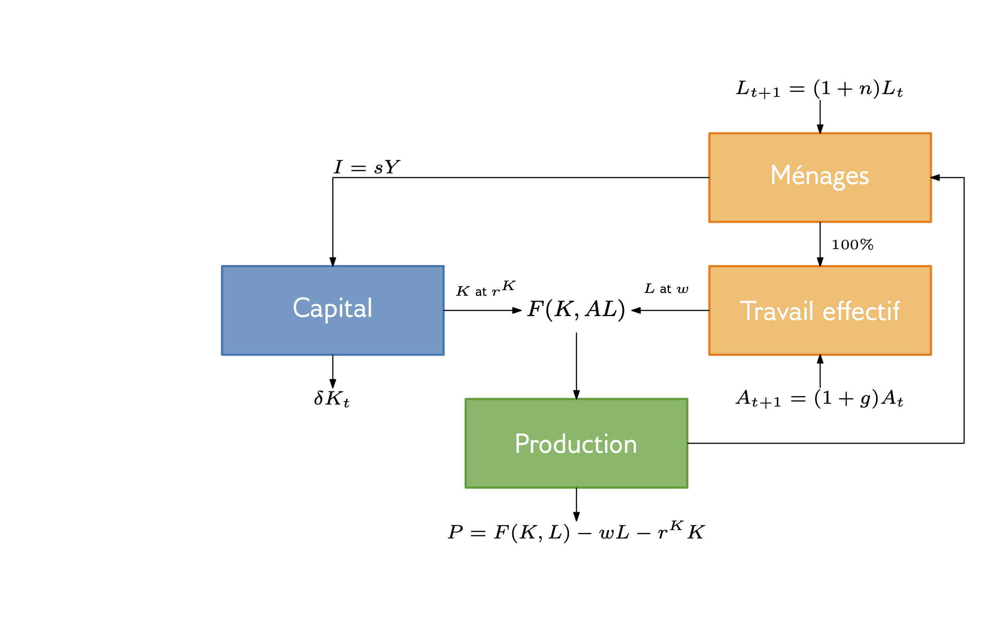
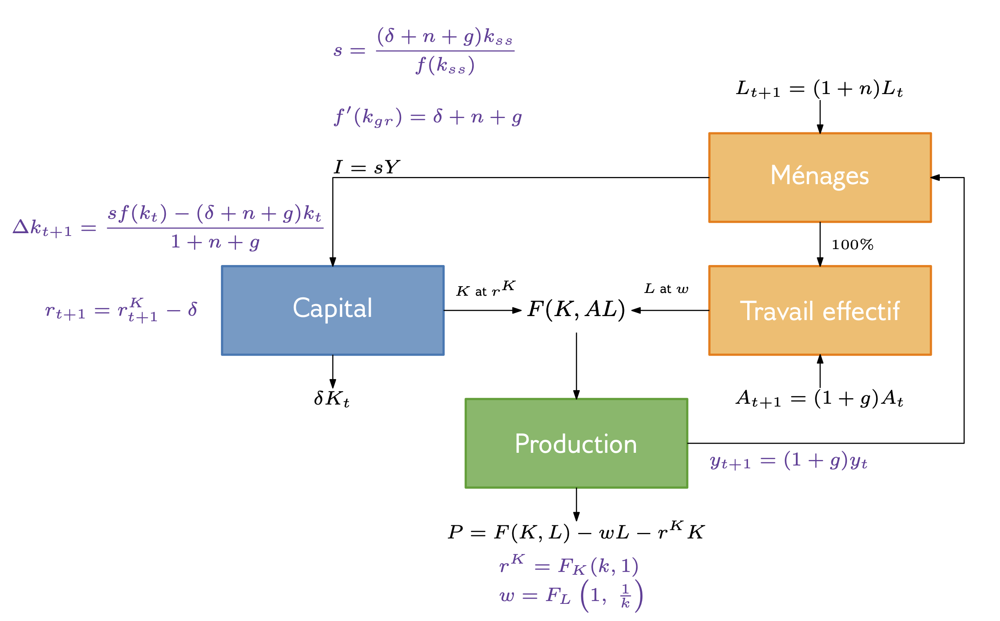

Modèle de Solow & Fondements microéconomiques - Rappels
TD Introduction à la macroéconomie
2025-03-25
Rappels de cours
Équilibre général
| Composante | Problème | Contraintes | Conditions du premier ordre |
|---|---|---|---|
| Ménage | \(\max\limits_{c_{t},l_{t},a_{t+1}} \sum_{t=0}^{\infty}\beta^{t}[u(c_{t})+v(l_{t})]\) | \(a_{t+1}=(1+r_{t})a_{t}+w_{t}(1-l_{t})+\Pi_{t}^{F}+\Pi_{t}^{I}-c_{t}\) \(a_{0}=K_{0}(1+r_{0}^{K}-\delta)\) donnée Condition de non-jeu de Ponzi |
\(\frac{v'(l_t)}{u'(c_t)}=w_t\) \(u'(c_t)=\beta(1+r_{t+1})u'(c_{t+1})\) |
| Entreprise | \(\max\limits_{K,L} F(K,L)-w_{t}L-r_{t}^{K}K\) | - | \(F_K(K_t,L_t)=r_t^K\) \(F_L(K_t,L_t)=w_t\) |
| Entreprise d’investissement | \(\max\limits_{I} \frac{r_{t+1}^{K}+1-\delta}{1+r}[(1-\delta)K_{t}+I] - [(1-\delta)K_{t}+I]\) | - | \(r_{t+1}=r_{t+1}^K-\delta\) |
Bouclage macro :
- \(L_t+l_t=1\)
(Contrainte de temps) - \(F(K_t,L_t)=c_t+I\)
(Marché des biens) - \(K_{t+1}=K_t(1-\delta)+I\) (Accumulation du capital)
Modèle de Solow - Rappel

Modèle de Solow - Rappel

TD 2 - Exercice 8
Supposons qu’une économie soit bien décrite par l’état stationnaire du modèle de croissance de Solow avec un progrès technologique constant et une croissance démographique nulle. Imaginez que nous prenions des données sur cette économie et effectuions un exercice de comptabilité de croissance.
Quelle part de croissance attribuerons-nous à l’accumulation de capital et quelle part à la technologie?
Quel est le rapport avec le résultat selon lequel sans progrès technologique, il n’y aurait pas de croissance à l’état stationnaire?
TD 2 - Exercice 8
Solution. On reprend la décomposition de la croissance du PIB :
\[\begin{aligned} g & =\frac{F\left(K_{t+1},L_{t+1},A_{t+1}\right)}{F\left(K_{t},L_{t},A_{t}\right)}-1 \\ & \approx\frac{F\left(K_{t},L_{t},A_{t}\right)+F_{K}\left(K_{t},L_{t},A_{t}\right)\left(K_{t+1}-K_{t}\right)+F_{L}\left(K_{t},L_{t},A_{t}\right)\left(L_{t+1}-L_{t}\right)+F_{A}\left(K_{t},L_{t},A_{t}\right)\left(A_{t+1}-A_{t}\right)}{F\left(K_{t},L_{t},A_{t}\right)}-1 \\ & = \underbrace{\frac{F_{K}\left(K_{t},L_{t},A_{t}\right)K_{t}}{F\left(K_{t},L_{t},A_{t}\right)}}_{\text{Capital Share}}\underbrace{\frac{\left(K_{t+1}-K_{t}\right)}{K_{t}}}_{\text{Growth Rate of Capital}}+\underbrace{\frac{F_{L}\left(K_{t},L_{t},A_{t}\right)L_{t}}{F\left(K_{t},L_{t},A_{t}\right)}}_{\text{Labor Share}}\underbrace{\frac{\left(L_{t+1}-L_{t}\right)}{L_{t}}}_{\text{Growth Rate of Labor}}+\underbrace{{\frac{F_{A}\left(K_{t},L_{t},A_{t}\right)A_{t}}{F\left(K_{t},L_{t},A_{t}\right)}\frac{\left(A_{t+1}-A_{t}\right)}{A_{t}}}}_{\text{"Solow Residual"}} \end{aligned}\]
A l’état d’équilibre :
La croissance du capital est égale à la croissance technologique \(g\)
La croissance du travail est nulle
\(g = \alpha \times g + (1-\alpha)\times 0 + \text{Solow residual} \Rightarrow \text{Solow residual}=(1-\alpha)\times g\)
La croissance du PIB est donc imputable :
- Pour \(\alpha g\) à la croissance du capital
- Pour \((1-\alpha)g\) au progrès technologique
Remarque : La croissance du capital est également indirectement due au progrès technologique dans le sens où il permet de contrecarrer les rendements décroissants du capital.
TD 2 - Exercice 9
Supposons que la véritable fonction de production à Gotham soit \(Y = AK^\alpha L^{1-\alpha}\)
Malheureusement, la criminalité est un énorme problème à Gotham, de sorte que pour chaque ouvrier, les entreprises doivent embaucher \(\gamma\) gardes de sécurité juste pour protéger leurs produits contre le vol. Les agents de sécurité qualifieront bien entendu leur activité de travail même s’ils ne produisent rien en réalité.
Utilisez la notation \(N\) pour désigner la main-d’œuvre totale (les ouvriers et les gardiens) et désignez le nombre d’ouvriers de production réels par \(L\).
TD 2 - Exercice 9
- Trouvez une expression pour la production totale en fonction de \(A\), \(K\), \(N\), \(\gamma\), et \(\alpha\).
TD 2 - Exercice 9
- Trouvez une expression pour la production totale en fonction de \(A\), \(K\), \(N\), \(\gamma\), et \(\alpha\).
Solution. Si il faut \(\gamma\) gardes par employé alors la force productive est \(L=\dfrac{N}{1+\gamma}\)
On en déduit \(Y=AK^\alpha\left(\dfrac{N}{1+\gamma}\right)^{1-\alpha}\)
TD 2 - Exercice 9
- Écrivez le problème d’une entreprise qui doit choisir le capital et le travail pour maximiser ses profits. Notez que l’entreprise devra payer un salaire aux agents de sécurité même s’ils ne produiront rien.
TD 2 - Exercice 9
- Écrivez le problème d’une entreprise qui doit choisir le capital et le travail pour maximiser ses profits. Notez que l’entreprise devra payer un salaire aux agents de sécurité même s’ils ne produiront rien.
Solution. L’entreprise maximise toujours ses profits
On résout \[\max_{K,N}Y-\text{Masse salariale} - \text{Cout du capital}\Leftrightarrow \max_{K,N}AK^\alpha\left(\dfrac{N}{1+\gamma}\right)^{1-\alpha}-wN-r^KK\]
TD 2 - Exercice 9
- Si l’entreprise représentative embauche tous les travailleurs et loue tout le capital, quels seront le salaire et le taux de location du capital? Exprimez-le en fonction de \(A\), \(K\), \(N\), \(\gamma\), et \(\alpha\).
TD 2 - Exercice 9
- Si l’entreprise représentative embauche tous les travailleurs et loue tout le capital, quels seront le salaire et le taux de location du capital? Exprimez-le en fonction de \(A\), \(K\), \(N\), \(\gamma\), et \(\alpha\).
Solution. On vérifie les hypothèses du modèle de Solow on a donc - \(w=\dfrac{\partial F}{\partial L}(K,L)=(1-\alpha)AK^\alpha\dfrac{N^{-\alpha}}{(1+\gamma)^{1-\alpha}}\) - \(r^K=\dfrac{\partial F}{\partial K}(K,L)=\alpha AK^{\alpha-1}\left(\dfrac{N}{1+\gamma}\right)^{1-\alpha}\)
TD 2 - Exercice 9
- Supposons qu’un économiste étudiant Gotham essaie d’estimer \(A\) à l’aide de l’équation \(Y = AK^\alpha L^{1-\alpha}\). L’économiste dispose de données précises sur \(K\), \(N\) et \(Y\). Cependant, l’économiste ne sait pas vraiment si les travailleurs sont impliqués dans la production ou dans les services de sécurité : dans les statistiques nationales, ils semblent tous employés. Par conséquent, l’économiste intégrera la valeur de \(N\) au lieu de la valeur de \(L\) dans l’estimation de \(A\). Quelle sera l’estimation de \(A\) par l’économiste ? Comment se compare-t-elle à la vraie valeur de \(A\) ?
TD 2 - Exercice 9
- Supposons qu’un économiste étudiant Gotham essaie d’estimer \(A\) à l’aide de l’équation \(Y = AK^\alpha L^{1-\alpha}\). L’économiste dispose de données précises sur \(K\), \(N\) et \(Y\). Cependant, l’économiste ne sait pas vraiment si les travailleurs sont impliqués dans la production ou dans les services de sécurité : dans les statistiques nationales, ils semblent tous employés. Par conséquent, l’économiste intégrera la valeur de \(N\) au lieu de la valeur de \(L\) dans l’estimation de \(A\). Quelle sera l’estimation de \(A\) par l’économiste ? Comment se compare-t-elle à la vraie valeur de \(A\) ?
Solution. On cherche à estimer \(A\) - L’économiste disposant de données précises sur \(K,N,Y\) estimera \(Y=A^{est}K^\alpha N^{1-\alpha}\) - En réalité la production ne dépend que de la main d’oeuvre “utile” : \(Y=AK^\alpha\left(\dfrac{N}{1+\gamma}\right)^{1-\alpha}\)
L’erreur est donc \(\dfrac{A^{est}}{A}=\dfrac{AK^\alpha\left(\dfrac{N}{1+\gamma}\right)^{1-\alpha}}{K^\alpha N^{1-\alpha}}=\left(\dfrac{1}{1+\gamma}\right)^{1-\alpha}<1\)
L’estimation de l’économiste est plus faible qu’en réalité
TD 2 - Exercice 9
- Quel est le rapport avec les résultats qui relient les niveaux de PIB aux institutions sociales et politiques ?
TD 2 - Exercice 9
- Quel est le rapport avec les résultats qui relient les niveaux de PIB aux institutions sociales et politiques ?
Solution. Du fait de la criminalité à Gotham, il faut employer des gardes et la productivité est sous-optimale par rapport à ce qui est permis par la productivité technologique.
TD 2 - Exercice 9
- Supposons que, dans une économie qui ne connaît pas le problème de criminalité de Gotham, le gouvernement tente de créer des emplois en obligeant les entreprises à embaucher \(\gamma\) assistants pour chaque travailleur de production. Le travail des assistants est de surveiller les ouvriers de production toute la journée et de ne rien faire. À la lumière de l’analyse ci-dessus, quels seraient les effets d’une telle politique ?
TD 2 - Exercice 9
- Supposons que, dans une économie qui ne connaît pas le problème de criminalité de Gotham, le gouvernement tente de créer des emplois en obligeant les entreprises à embaucher \(\gamma\) assistants pour chaque travailleur de production. Le travail des assistants est de surveiller les ouvriers de production toute la journée et de ne rien faire. À la lumière de l’analyse ci-dessus, quels seraient les effets d’une telle politique ?
Solution. On observerait le même effet.
Note: Tout ça est très réducteur, le travail d’un assistant n’est jamais non productif.
TD 2 - Exercice 10
Supposons que nous observions que Usuria (une économie fermée) croît d’environ 6% par an, et que nous essayions de comprendre pourquoi. Nous savons que la population active est restée constante.
— Conjecture 1 : L’économie est dans un état stationnaire avec progrès technologique. Il y a eu accumulation de capital simplement pour maintenir \(\frac{K}{AL}\) constant, mais la cause de la croissance a été la croissance de la PTF.
— Conjecture 2 : L’économie est partie d’un niveau de stock de capital très faible (en dessous de l’état stationnaire) et a connu une croissance parce qu’elle converge vers l’état stationnaire, mais la PTF est restée constante.
Idéalement, si nous voulions faire la distinction entre la conjecture 1 et la conjecture 2, nous pourrions faire un exercice de comptabilité de la croissance. Malheureusement, Usuria ne produit pas de statistiques fiables sur l’accumulation du capital qui nous permettraient de le faire. Nous disposons cependant de données sur les taux d’intérêt en Usuria. Comment utiliserait-on ces données pour distinguer la conjecture 1 de la conjecture 2 ? Soyez aussi mathématiquement précis que possible.
TD 2 - Exercice 10
Solution.
Conjecture 1: \(k=cste=\dfrac{K}{AL}\Rightarrow \dfrac{\partial F}{\partial K}(k,1)=cste \Rightarrow r=r^K-\delta=cste\)
La croissance économique provient exclusivement de la croissance exogène de \(A\)
Conjecture 2: \(k\) est croissant donc \(K\) croît plus vite que \(AL\)
L’hypothèse de rendements marginaux décroissants (\(\dfrac{\partial F}{\partial K}\) décroissante de \(K\)) nous dit que \(r^K\) et donc \(r\) sont donc décroissants.
La productivité marginale du capital diminue à mesure que l’accumulation de capital se rapproche de son niveau stationnaire.
\[\begin{aligned} g & =\frac{F\left(K_{t+1},A_{t+1}L_{t+1}\right)}{F\left(K_{t},A_{t}L_{t}\right)}-1 \\ & \approx\frac{F\left(K_{t},A_{t}L_{t}\right)+\frac{\partial F}{\partial K}\left(K_{t},A_{t}L_{t}\right)\left(K_{t+1}-K_{t}\right)+\frac{\partial F}{\partial AL}\left(K_{t},A_{t}L_{t}\right)\left(A_{t+1}L_{t+1}-A_{t}L_{t}\right)}{F\left(K_{t},A_{t}L_{t}\right)}-1 \\ & =\frac{1}{Y}\left(\frac{\partial{F}}{\partial{K}}\left(K_{t},A_{t}L_{t}\right)\left(K_{t+1}-K_{t}\right)+\frac{\partial{F}}{\partial{A}}\left(K_{t},A_{t}L_{t}\right)\left(A_{t+1}-A_{t}\right)\right) \end{aligned}\]
TD 3 - Exercice 3
Considérons une économie correctement décrite par le modèle de croissance de Solow. La fonction de production est : \(Y = K^\alpha L^{1-\alpha}\)
La population est constante et égale à 1 et il n’y a pas de progrès technologique. Le taux d’épargne est \(s\) et le taux d’amortissement est \(\delta\).
TD 3 - Exercice 3
- Quel sera le stock de capital au long terme ?
TD 3 - Exercice 3
- Quel sera le stock de capital au long terme ?
Solution. On a \(\dfrac{k_{t+1}}{k_t}=\dfrac{(1-\delta)K_t+sY_t}{K_t}\dfrac{L_t}{L_{t+1}}=\dfrac{1-\delta +s\frac{Y_t}{K_t}}{1+n}\)
Si \(k_{t+1}=k_t\) on a donc \(1-\delta + sk^{\alpha-1}=1+n\) d’où \(k^*=\left(\dfrac{s}{\delta+n}\right)^{\frac{1}{1-\alpha}}\)
TD 3 - Exercice 3
- Quel sera le taux d’intérêt au long terme ?
TD 3 - Exercice 3
- Quel sera le taux d’intérêt au long terme ?
Solution. \(r=r^K-\delta=\dfrac{\partial F}{\partial K}(K,L)-\delta=\dfrac{\partial F}{\partial K}(k,1)-\delta=\alpha k^{*^{\alpha-1}}-\delta = \alpha\dfrac{\delta + n}{s}-\delta\)
TD 3 - Exercice 3
Pour le reste des questions, supposez \(s = 0,4\), \(\alpha = 0,35\) et \(\delta = 0,1\) et que l’économie se trouve initialement à l’état stationnaire.
- Si le taux d’épargne augmente de \(s = 0,4\) à \(s = 0,5\) :
- Le PIB va-t-il augmenter à long terme ?
- La consommation va-t-elle augmenter à long terme ?
TD 3 - Exercice 3
Pour le reste des questions, supposez \(s = 0,4\), \(\alpha = 0,35\) et \(\delta = 0,1\) et que l’économie se trouve initialement à l’état stationnaire.
- Si le taux d’épargne augmente de \(s = 0,4\) à \(s = 0,5\) :
- Le PIB va-t-il augmenter à long terme ?
- La consommation va-t-elle augmenter à long terme ?
Solution. Pour \(n=0\)
- \(y^*=k^{*^\alpha}=\left(\dfrac{s}{\delta}\right)^{\frac{\alpha}{1-\alpha}}\)
\(y^*\) augmente avec \(s\)
- La consommation à l’équilibre est, à l’équilibre, ce qu’il reste après avoir remplacé le capital déprécié
\(c^*=(1-s)y^*=(1-s)\left(\dfrac{s}{\delta}\right)^{\frac{\alpha}{1-\alpha}}\) elle diminue avec \(s\)
TD 3 - Exercice 3
- Supposons qu’il y a une dynastie de ménages vivant sur deux périodes dans l’économie (les Friedman) qui décide qu’au lieu de simplement épargner une fraction exogène de son revenu, elle va choisir sa consommation et son épargne de façon à maximiser ses préférences : \(u(c_1, c_2) = u(c_1) + \beta(c_2)\)
Les Friedman peuvent emprunter ou prêter au taux d’intérêt du marché. Comme ce sont les seuls à agir de cette façon et qu’ils sont petits par rapport à l’économie, nous allons supposer que l’économie globale (quantités globales, prix, etc.) reste inchangée. La consommation des Friedman sera-t-elle élevée au début puis faible à la fin, ou sera-t-elle faible au début puis élevée à la fin, ou restera-t-elle constante ?
TD 3 - Exercice 3
- Supposons qu’il y a une dynastie de ménages vivant sur deux périodes dans l’économie (les Friedman) qui décide qu’au lieu de simplement épargner une fraction exogène de son revenu, elle va choisir sa consommation et son épargne de façon à maximiser ses préférences : \(u(c_1, c_2) = u(c_1) + \beta(c_2)\)
Les Friedman peuvent emprunter ou prêter au taux d’intérêt du marché. Comme ce sont les seuls à agir de cette façon et qu’ils sont petits par rapport à l’économie, nous allons supposer que l’économie globale (quantités globales, prix, etc.) reste inchangée. La consommation des Friedman sera-t-elle élevée au début puis faible à la fin, ou sera-t-elle faible au début puis élevée à la fin, ou restera-t-elle constante ?
Solution. Le taux d’intérêt du marché est \(r=-0.125\)
On cherche à résoudre le problème \(\max_{c_1,c_2}u(c_1)+\beta u(c_2)\) avec la contrainte \(c_2=y_2+(1+r)(y_1-c_1)\)
La résolution donne \(u'(c_1)=\beta(1+r)u'(c_2)\)
Si \(r<0\) alors \(u'(c_1)<u'(c_2)\)
Comme l’utilité marginale \(u'\) est décroissante on a \(c_1>c_2\)
TD 3b - Exercice 2
Supposons que les préférences en matière de consommation et de loisirs soient : \(u(c, l) = \log(c) + \alpha \log(l)\)
et que les ménages résolvent : \(\max_{c,l} u(c, l) = \log(c) + \alpha \log(l)\) \(s.t. \quad c=w(1-l)(1-\tau)+T\)
TD 3b - Exercice 2
- Trouvez les conditions d’optimalités de la décision consommation-temps de loisir.
TD 3b - Exercice 2
- Trouvez les conditions d’optimalités de la décision consommation-temps de loisir.
Solution. On résout le problème \(\max_{c,l}\log(c)+\alpha\log(l)\) sous contrainte \(c=w(1-l)(1-\tau)+T\)
\(\mathcal{L}(c,l,\lambda)= \log(c)+\alpha\log(l)-\lambda(c-w(1-l)(1-\tau)-T)\)
Les conditions du premières ordres donnent \(\dfrac{\partial \mathcal{L}}{\partial c}=\dfrac{1}{c}-\lambda=0\) et \(\dfrac{\partial \mathcal{L}}{\partial l}=\dfrac{\alpha}{l}-\lambda w(1-\tau)=0\) d’où \(\dfrac{\alpha}{l}=\dfrac{w}{c}(1-\tau)\)
TD 3b - Exercice 2
- Utilisez la contrainte budgétaire pour trouver une solution pour \(l\). \(l\) doit être fonction de \(w\), \(\tau\), \(T\) et \(\alpha\).
TD 3b - Exercice 2
- Utilisez la contrainte budgétaire pour trouver une solution pour \(l\). \(l\) doit être fonction de \(w\), \(\tau\), \(T\) et \(\alpha\).
Solution. La contrainte \(c=w(1-l)(1-\tau)+T\) implique \(\dfrac{lw}{\alpha}(1-\tau)=w(1-l)(1-\tau)+T\) d’où \(l\left(\dfrac{1}{\alpha}+1\right)=1+\dfrac{T}{w(1-\tau)}\)
On déduit \(l=\dfrac{1+\frac{T}{w(1-\tau)}}{\frac{1}{\alpha}+1}\) et \(c = \dfrac{w(1-\tau)+T}{1+\alpha}\)
TD 3b - Exercice 2
- Supposez \(T = 0\). Comment \(l\) réagit-il au taux d’imposition \(\tau\) ? Interprétez.
TD 3b - Exercice 2
- Supposez \(T = 0\). Comment \(l\) réagit-il au taux d’imposition \(\tau\) ? Interprétez.
Solution. \(T=0\Rightarrow l=\dfrac{1}{\frac{1}{\alpha}+1}\)
\(l\) ne dépend plus du taux d’imposition
TD 3b - Exercice 2
Supposez maintenant qu’en Europe et aux États-Unis nous ayons : \(\alpha=1,54; w=1\)
mais qu’aux Etats Unis, \(\tau=0,34; T=0.102\)
et qu’en Europe, \(\tau=0,53; T=0.124\)
- Calculez le temps de loisir aux États-Unis et en Europe. Si nous interprétons 1 comme la durée totale de votre vie d’adulte, quelle fraction de leur vie d’adulte les Européens et les Américains travaillent-ils ? Commentez le rôle respectif des impôts et des transferts dans cette analyse en utilisant vos réponses aux parties 2. et 3.
TD 3b - Exercice 2
Supposez maintenant qu’en Europe et aux États-Unis nous ayons : \(\alpha=1,54; w=1\)
mais qu’aux Etats Unis, \(\tau=0,34; T=0.102\)
et qu’en Europe, \(\tau=0,53; T=0.124\)
- Calculez le temps de loisir aux États-Unis et en Europe. Si nous interprétons 1 comme la durée totale de votre vie d’adulte, quelle fraction de leur vie d’adulte les Européens et les Américains travaillent-ils ? Commentez le rôle respectif des impôts et des transferts dans cette analyse en utilisant vos réponses aux parties 2. et 3.
Solution. L’application numérique donne - US: \(l=0.7\) - EU: \(l=0.77\)
La combinaison plus de taxes et plus de redistribution permet aux européens de travailler moins
TD 3b - Exercice 2
- Les valeurs de \(\tau\) et \(T\) ci-dessus ne sont pas arbitraires. Si vous avez effectué les calculs correctement, vous devriez constater que les deux gouvernements ont des budgets équilibrés (à l’erreur d’arrondi près), c’est-à-dire qu’ils redistribuent toutes les recettes fiscales sous forme de transferts. Vérifiez que c’est bien le cas.
TD 3b - Exercice 2
- Les valeurs de \(\tau\) et \(T\) ci-dessus ne sont pas arbitraires. Si vous avez effectué les calculs correctement, vous devriez constater que les deux gouvernements ont des budgets équilibrés (à l’erreur d’arrondi près), c’est-à-dire qu’ils redistribuent toutes les recettes fiscales sous forme de transferts. Vérifiez que c’est bien le cas.
Solution. Dans les deux cas on vérifie \(\tau(1-l)=T\) - US: \(\tau(1-l)=T=0.102\) - EU: \(\tau(1-l)=T=0.124\)
Le budget est bien à l’équilibre
TD 3b - Exercice 2
- En supposant que la fonction de production soit \(Y = L = 1 − l\), dans quelle mesure le PIB par habitant en Europe est-il inférieur à celui des États-Unis?
TD 3b - Exercice 2
- En supposant que la fonction de production soit \(Y = L = 1 − l\), dans quelle mesure le PIB par habitant en Europe est-il inférieur à celui des États-Unis?
Solution. Le PIB par habitant vaut \(\dfrac{Y}{1}=1-l\)
Il est donc plus bas de \(1-\dfrac{L_{EU}}{L_{US}}=1-\dfrac{0.23}{0.3}=22\%\) en Europe
TD 3b - Exercice 2
- Calculez le bien-être relatif de l’Europe en résolvant \(\lambda\) dans l’équation suivante : \(u(c_{Europe},l_{Europe}) = u(\lambda c_{US},l_{US})\). Interprétez la valeur de \(\lambda\) que vous trouvez.
TD 3b - Exercice 2
- Calculez le bien-être relatif de l’Europe en résolvant \(\lambda\) dans l’équation suivante : \(u(c_{Europe},l_{Europe}) = u(\lambda c_{US},l_{US})\). Interprétez la valeur de \(\lambda\) que vous trouvez.
Solution. On cherche le bien-être relatif en Europe (ajustement de consommation pour arriver à utilité constante)
\(u(c_{EU},l_{EU})=u(\lambda c_{US},l_{US})\Leftrightarrow \log(c_{EU})+\alpha\log(l_{EU})=\log(\lambda c_{US})+\alpha\log(l_{US})\)
On a donc \(\lambda = \dfrac{c_{EU}l_{EU}^\alpha}{c_{US}l_{US}^\alpha}=\dfrac{(1-l_{EU})l_{EU}^\alpha}{(1-l_{US})l_{US}^\alpha} =0.9\)
TD 3b - Exercice 2
- Comparez les réponses aux questions 6. et 7.
TD 3b - Exercice 2
- Comparez les réponses aux questions 6. et 7.
Solution. Le PIB par habitant est inférieur de \(22\%\) en Europe. Néanmoins le bien être n’est pas pour autant inférieur car la différence de travail est compensée par plus de loisirs en Europe. Il est en fait équivalent pour une consommation inférieure de \(10\%\)
TD 3b - Exercice 2
- Supposez qu’un décideur politique européen examine le calcul de Prescott et conclut que l’Europe pourrait augmenter son bien-être d’un facteur \(1/\lambda\) en réduisant son taux d’imposition et son niveau de transferts aux niveaux américains. Pensez-vous qu’il a raison ? Pourquoi ? Ne répondez pas mécaniquement à cette question : réfléchissez à ce que fait ce calcul et à ce qu’il laisse de côté.
TD 3b - Exercice 2
Dans tout calcul de ce type, un paramètre important est l’élasticité de l’offre de travail. Une définition de l’élasticité souvent étudiée par les économistes du travail est connue sous le nom d’élasticité de Frisch. Elle est basée sur la réponse à la question suivante : supposons que nous augmentions les salaires mais que nous ajustions le revenu du ménage de manière à ce que la consommation reste constante : comment l’offre de travail évoluerait-elle ?
TD 3b - Exercice 2
- Utilisez votre réponse à la question 1 pour trouver une expression pour l’offre de travail \((1-l)\) en termes de \(w(1-\tau)\), \(c\) et \(\alpha\). Notez qu’il faut maintenant maintenir la consommation constante, donc l’idée est de ne pas remplacer \(c\) par la contrainte budgétaire comme vous l’avez fait à la question 2.
TD 3b - Exercice 2
- Utilisez votre réponse à la question 1 pour trouver une expression pour l’offre de travail \((1-l)\) en termes de \(w(1-\tau)\), \(c\) et \(\alpha\). Notez qu’il faut maintenant maintenir la consommation constante, donc l’idée est de ne pas remplacer \(c\) par la contrainte budgétaire comme vous l’avez fait à la question 2.
Solution. On dérive des conditions du premier ordre \(L=1-l=1-\dfrac{\alpha c}{w(1-\tau)}\)
TD 3b - Exercice 2
- Utilisez votre réponse à la partie 10 pour trouver une expression pour \(\frac{\partial(1-l)}{\partial w(1-\tau)} \frac{w(1-\tau)}{1-l}\), c’est-à-dire l’élasticité de l’offre de travail par rapport aux salaires après impôts, en maintenant la consommation constante.
TD 3b - Exercice 2
- Utilisez votre réponse à la partie 10 pour trouver une expression pour \(\frac{\partial(1-l)}{\partial w(1-\tau)} \frac{w(1-\tau)}{1-l}\), c’est-à-dire l’élasticité de l’offre de travail par rapport aux salaires après impôts, en maintenant la consommation constante.
Solution. L’élasticité de l’offre de travail par rapport aux salaires après impots et à consommation constante est donnée par
\(\dfrac{\partial (1-l)}{\partial w(1-\tau)}\dfrac{w(1-\tau)}{1-l}=\dfrac{\alpha c}{(w(1-\tau))^2}\dfrac{w(1-\tau)}{1-l}=\dfrac{\alpha c}{w(1-\tau)-\alpha c}\)
TD 3b - Exercice 2
- Insérez les valeurs de \(\alpha\), \(\tau\), \(w\), \(c\) et \(l\) que vous avez trouvées pour le cas américain dans l’expression de l’élasticité. Quel nombre obtenez-vous ? Les estimations empiriques de cette élasticité se situent généralement entre 0,4 et 1. Comment se compare-t-elle à l’élasticité impliquée par le modèle de Prescott? Pourquoi est-ce important pour nos conclusions sur la politique fiscale ?
TD 3b - Exercice 2
- Insérez les valeurs de \(\alpha\), \(\tau\), \(w\), \(c\) et \(l\) que vous avez trouvées pour le cas américain dans l’expression de l’élasticité. Quel nombre obtenez-vous ? Les estimations empiriques de cette élasticité se situent généralement entre 0,4 et 1. Comment se compare-t-elle à l’élasticité impliquée par le modèle de Prescott? Pourquoi est-ce important pour nos conclusions sur la politique fiscale ?
Solution. Pour \(l=0.7\) elle vaut \(2.33\) ce qui est bien plus élevé que les données réelles.
L’élasticité de Frisch mesure la sensibilité de l’offre de travail aux variations des salaires après impôts. Dans ce cadre théorique, une augmentation des impôts réduit considérablement l’offre de travail.
Prescott utilise ce cadre pour expliquer pourquoi les Européens travaillent moins que les Américains, en attribuant cet écart principalement aux différences de taxation et de transferts. Si l’élasticité de Frisch est en réalité plus faible (entre 0,4 et 1), cela signifie que les impôts et les transferts ne peuvent pas expliquer entièrement ces différences.
D’autres facteurs doivent être pris en compte:
Préférences culturelles: Les Européens pourraient simplement valoriser davantage les loisirs
Réglementations du marché du travail: Les institutions influencent la durée du travail (congés payés, protection de l’emploi)
Services publics: En Europe, des services publics plus développés (santé, éducation) réduisent le besoin de travailler davantage pour financer ces services de manière privée
Modèle Diamond-Mortensen-Pissarides - Hypothèses clés
- Recherche d’emploi avec frictions : travailleurs et entreprises ne se trouvent pas instantanément.
- Fonction de mise en relation \(m(U,V)\) : rendements décroissants en \(U\) et \(V\).
- Négociation des salaires (Nash bargaining) : partage du surplus de l’emploi selon \(\mu\).
- Coût de création de poste \(\chi\) : une entreprise crée un poste si \(\chi \leq q(V,U)(1-\mu)(y-b)\).
Courbes essentielles
Courbe de Beveridge
- Relation négative entre chômage et postes vacants.
- Elle capture l’efficacité du marché du travail à faire correspondre les chômeurs aux postes vacants.
Courbe de création d’emploi
- Relation positive entre chômage et création de postes.
- Plus il y a de chômeurs, plus il est facile pour une entreprise de recruter, donc les incitations à publier une offre augmentent.
- Dépend du coût d’embauche et du pouvoir de négociation.
TD3b - Exercice 3
Supposez que le marché du travail soit bien décrit par le modèle de recherche d’emploi.
Lorsque la COVID-19 a éclaté en mars 2020, des mesures de confinement généralisées ont été mises en place et les employeurs ont licencié un nombre record de travailleurs. Il s’agissait majoritairement de licenciements temporaires, avec l’intention explicite des employeurs de réembaucher lorsque la situation s’améliorerait.
Le nombre record de licenciements a entraîné une augmentation sans précédent des entrées de chômeurs. En outre, du fait du contexte incertain, les entreprises ont ralenti leurs efforts d’embauche.
Questions :
- Comment les courbes de création d’emploi et de Beveridge varient-elles ?
- Qu’attendez-vous quant au nombre d’emplois vacants ?
- Qu’attendez-vous quant au taux de chômage ?
- Qu’attendez-vous quant à la courbe de Beveridge dans les données ?
TD3b - Exercice 3
Supposez que le marché du travail soit bien décrit par le modèle de recherche d’emploi.
Lorsque la COVID-19 a éclaté en mars 2020, des mesures de confinement généralisées ont été mises en place et les employeurs ont licencié un nombre record de travailleurs. Il s’agissait majoritairement de licenciements temporaires, avec l’intention explicite des employeurs de réembaucher lorsque la situation s’améliorerait.
Le nombre record de licenciements a entraîné une augmentation sans précédent des entrées de chômeurs. En outre, du fait du contexte incertain, les entreprises ont ralenti leurs efforts d’embauche.
Questions :
- Comment les courbes de création d’emploi et de Beveridge varient-elles ?
- Qu’attendez-vous quant au nombre d’emplois vacants ?
- Qu’attendez-vous quant au taux de chômage ?
- Qu’attendez-vous quant à la courbe de Beveridge dans les données ?
Solution. L’augmentation des entrées de chômeurs entraîne un déplacement vers l’extérieur de la courbe de Beveridge. La baisse drastique de la demande (et de la création d’emploi) implique la rotation dans le sens des aiguilles d’une montre de la courbe de création d’emplois. Le taux de chômage augmente tandis que l’effet sur le nombre d’offres d’emploi est ambiguë. Comme il y a un déplacement de la courbe de Beveridge (et pas seulement un déplacement de la courbe de création d’emplois), la courbe de Beveridge observée sera plus à droite. Dans les faits, le taux de chômage a atteint un record de 14,7 % et le taux d’offres d’emploi a à peine baissé.
TD3b - Exercice 3
À partir de 2021, le marché du travail américain a connu une augmentation du taux de démissions. De nombreux travailleurs, après avoir réévalué leurs choix de carrière et leur équilibre entre vie professionnelle et vie privée, ont décidé de changer d’emploi.
De fait, la compétition à la recherche d’emploi devient plus rude. À un niveau donné d’offres d’emploi et de chômage, il est plus difficile de trouver un emploi adapté.
Dans le même temps, le comportement des entreprises change. Puisqu’il y a davantage de salariés cherchant à changer d’emploi, elles décident de publier davantage d’offres d’emploi.
Questions :
- Comment les courbes de création d’emploi et de Beveridge varient-elles ?
- Qu’attendez-vous quant au nombre d’emplois vacants ?
- Qu’attendez-vous quant au taux de chômage ?
- Qu’attendez-vous quant à la courbe de Beveridge dans les données ?
TD3b - Exercice 3
À partir de 2021, le marché du travail américain a connu une augmentation du taux de démissions. De nombreux travailleurs, après avoir réévalué leurs choix de carrière et leur équilibre entre vie professionnelle et vie privée, ont décidé de changer d’emploi.
De fait, la compétition à la recherche d’emploi devient plus rude. À un niveau donné d’offres d’emploi et de chômage, il est plus difficile de trouver un emploi adapté.
Dans le même temps, le comportement des entreprises change. Puisqu’il y a davantage de salariés cherchant à changer d’emploi, elles décident de publier davantage d’offres d’emploi.
Questions :
- Comment les courbes de création d’emploi et de Beveridge varient-elles ?
- Qu’attendez-vous quant au nombre d’emplois vacants ?
- Qu’attendez-vous quant au taux de chômage ?
- Qu’attendez-vous quant à la courbe de Beveridge dans les données ?
Solution. Pour un niveau donné d’offres d’emploi, la probabilité de trouver un emploi d’un chômeur diminue parce qu’ils sont en concurrence avec des personnes employées. Il s’agit d’un changement structurel du taux de sortie du chômage. De fait, la courbe de Beveridge se déplace vers l’extérieur. En parallèle, la demande des entreprises change et pour un même taux de chômage, elles augmentent le nombre d’offres d’emplois. Par conséquent, la courbe de création d’emplois tourne davantage dans le sens inverse des aiguilles d’une montre. Le nombre d’offres d’emploi augmente tandis que l’effet sur le taux de chômage est ambiguë.
Dans les faits, entre le début de 2021 et le printemps 2022, on observe une forte augmentation du taux d’offres d’emploi et une baisse du taux de chômage à 3,6 % en mars 2022.
TD3b - Exercice 3
#| '!! shinylive warning !!': |
#| shinylive does not work in self-contained HTML documents.
#| Please set `embed-resources: false` in your metadata.
#| standalone: true
#| viewerHeight: 550
from shiny import App, render, ui, reactive
import matplotlib.pyplot as plt
import numpy as np
# Data storage for past curves
past_curves = []
app_ui = ui.page_fluid(
ui.h2("Beveridge and Job Creation Curves"),
ui.layout_sidebar(
ui.sidebar(
ui.input_slider("alpha", "Beveridge curve shift", 0.5, 3.0, 1.0, step=0.1),
ui.input_slider("beta", "Job creation curve shift", 0.5, 3.0, 1.0, step=0.1),
ui.input_action_button("reset", "Reset All Curves")
),
ui.output_plot("curve_plot")
)
)
def server(input, output, session):
global past_curves
# Track changes in slider values to automatically store curves
@reactive.Effect
@reactive.event(input.alpha, input.beta)
def _():
# Define unemployment range
u = np.linspace(0.02, 0.12, 100)
# Beveridge Curve: properly convex relationship (hyperbolic)
v_beveridge = input.alpha() * 0.02 / (u + 0.02)
# Job Creation Curve with steeper slope for more dramatic changes
v_job_creation = input.beta() * (0.02 + u * 1.5)
# Store curves
past_curves.append((u, v_beveridge, v_job_creation))
if len(past_curves) > 5: # Keep only last 5 iterations
past_curves.pop(0)
# Reset button clears all past curves
@reactive.Effect
@reactive.event(input.reset)
def _():
global past_curves # Use global instead of nonlocal
past_curves = []
@output
@render.plot
def curve_plot():
# Define unemployment range
u = np.linspace(0.02, 0.12, 100)
# Current curves
v_beveridge = input.alpha() * 0.02 / (u + 0.02)
v_job_creation = input.beta() * (0.02 + u * 1.5)
# Calculate intersection points
intersections = []
for u_val, v_bev, v_job in past_curves:
# Find approximate intersection
diff = np.abs(v_bev - v_job)
idx = np.argmin(diff)
if diff[idx] < 0.01: # Only add if it's a real intersection
intersections.append((u_val[idx], v_bev[idx]))
# Calculate current intersection
diff = np.abs(v_beveridge - v_job_creation)
idx = np.argmin(diff)
if diff[idx] < 0.01:
intersections.append((u[idx], v_beveridge[idx]))
# Plot
fig, ax = plt.subplots(figsize=(10, 7))
ax.set_xlabel("Unemployment Rate", fontsize=12)
ax.set_ylabel("Vacancy Rate", fontsize=12)
ax.set_title("Beveridge Curve and Job Creation Curve", fontsize=14)
ax.set_xlim(0.02, 0.12)
ax.set_ylim(0, 0.5) # Adjusted for better visibility
# Plot previous curves with transparency
for i, (u_prev, v_b_prev, v_j_prev) in enumerate(past_curves[:-1]):
ax.plot(u_prev, v_b_prev, 'b--', alpha=0.3) # Beveridge Curve
ax.plot(u_prev, v_j_prev, 'r--', alpha=0.3) # Job Creation Curve
# Plot current curves
ax.plot(u, v_beveridge, 'b', label="Beveridge Curve", linewidth=2)
ax.plot(u, v_job_creation, 'r', label="Job Creation Curve", linewidth=2)
# Mark the current equilibrium
if intersections:
u_eq, v_eq = intersections[-1]
ax.scatter(u_eq, v_eq, color='green', s=100, zorder=5,
label=f"Equilibrium (U={u_eq:.3f}, V={v_eq:.3f})")
# Mark previous equilibrium points
for i, (u_eq, v_eq) in enumerate(intersections[:-1]):
ax.scatter(u_eq, v_eq, color='gray', s=50, alpha=0.5, zorder=4)
ax.grid(True, linestyle='--', alpha=0.7)
ax.legend(fontsize=10)
return fig
app = App(app_ui, server)Papier scientifique de la semaine